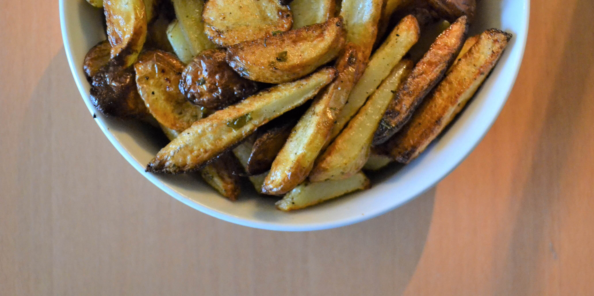

Oven Chips

Serves 2 (210cal per serving)
Ingredients
- 400g Potatoe 300cal
- 1 Tbsp Olive Oil 119cal
- 1 tbsp Thyme
- 1 tsp Salt
- 1 tsp Pepper
Preperation
- Leave skin on potatoe, cut into shape of fries 10mm by 10mm.
- Transfer to large bowl and soak in water for 30 minutes,
drain, rinse and dry with a tea towel.
- Transfer back to bowl and add tbsp of olive oil,
add salt, pepper, thyme, basil and parsley and mix.
- Spread over baking tray and cook at 240 degrees for 30 minutes.